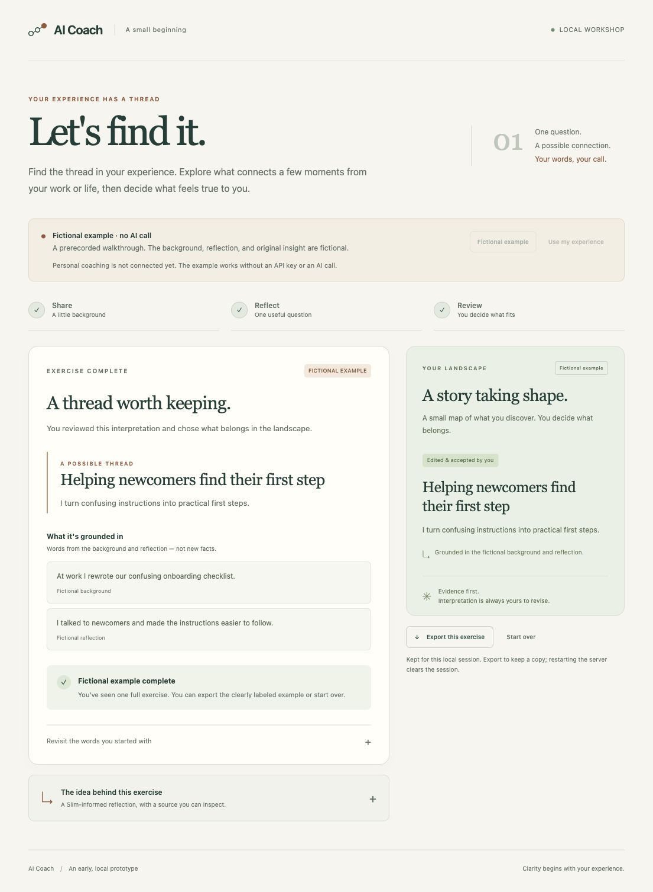
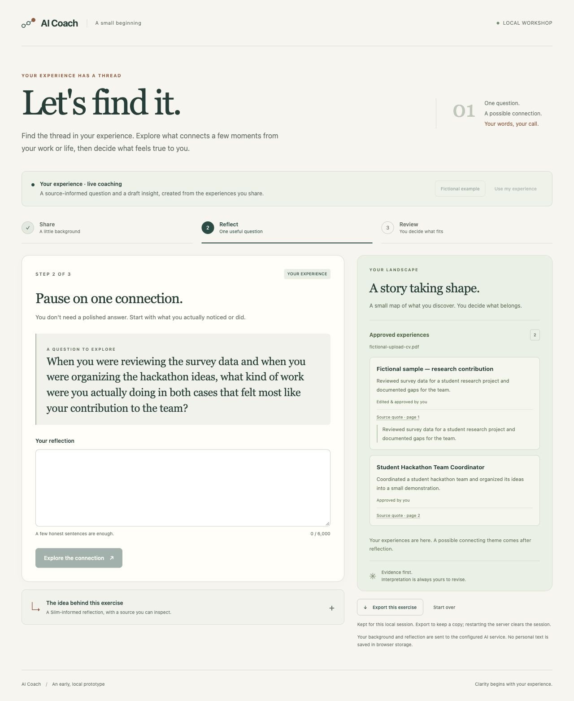
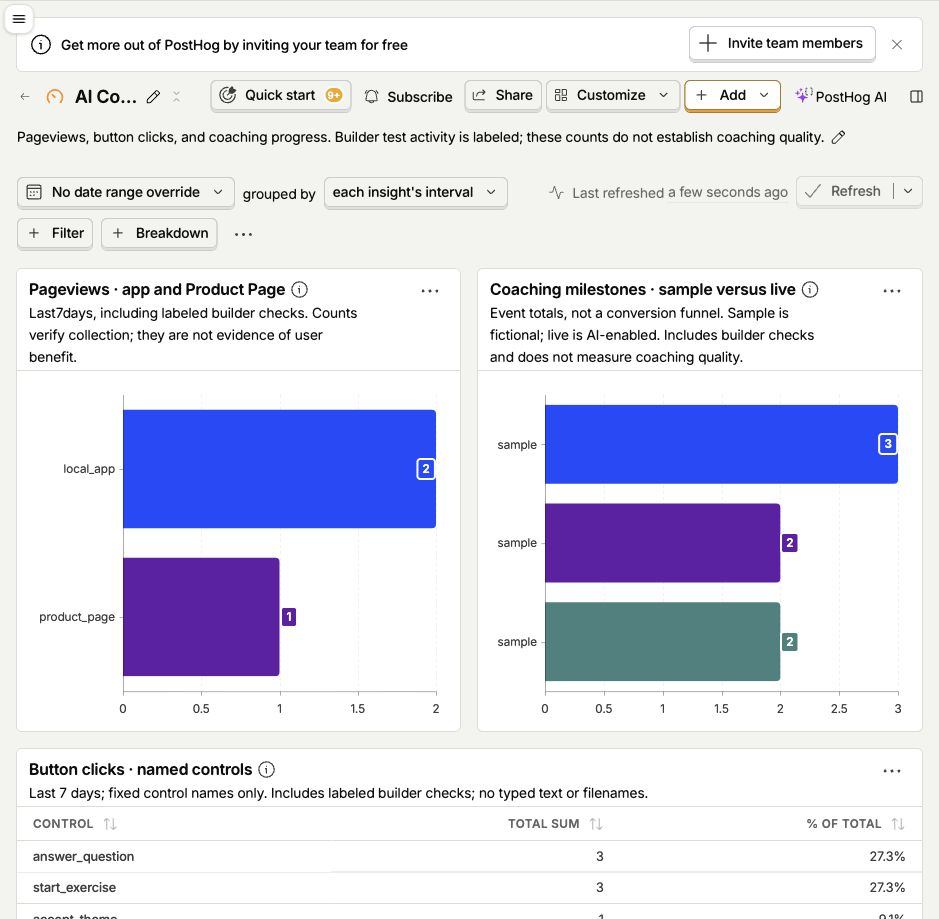
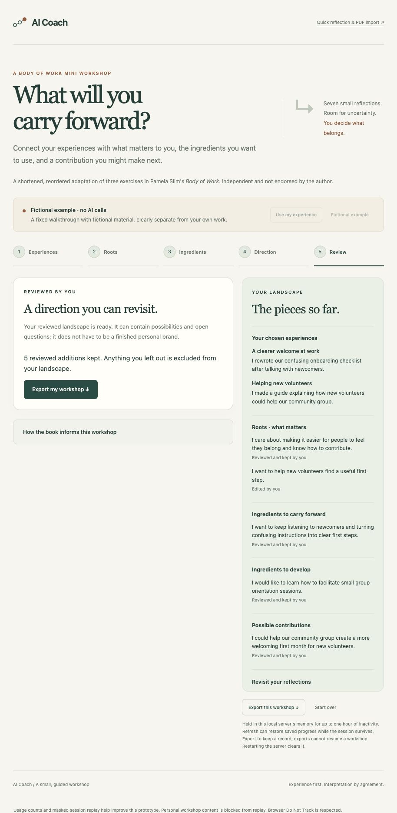

An AI personal branding coach that helps professionals connect their experiences, strengths, and ambitions into a clear story about who they are and the value they bring.
Current Status: Build 3 deployment preparation. The November 22 opening-line refinement is pushed; production protections and shipping instructions were completed November 23. Public deployment and submission remain pending. The local app retains the quick reflection and reviewed PDF intake, and adds a separate book-informed mini-workshop at /workshop. It uses seven guided questions and optional AI synthesis before individual review.
Demo: The app runs on the builder's laptop. The screenshots below show a reviewed example theme and a live question based on approved experiences from a fictional CV.
The quick exercise's fictional example uses prepared text and makes no AI calls. Its live mode adapts Pamela Slim's approach to finding themes across experiences, described in Dorie Clark's article. The new mini-workshop instead uses a reviewed, shortened adaptation of selected exercises from the supplied Body of Work transcription. Neither flow represents or is endorsed by Slim.
Book workshop: Confirm one to three experiences in your own words, or select already-approved PDF cards. Explore roots, ingredients to carry forward or develop, and a possible contribution. Leave uncertain answers open. Keep your own words without a model call, or request one AI synthesis and review each proposal with its personal evidence and separate method reference. Future goals remain distinct from current capabilities.


Checked November 4: 70 automated checks passed. Browser testing confirmed live extraction from a fictional two-page CV, editing and approving two of three cards, export containing only those approved cards, and a question based on them. The first question response failed validation and worked on one retry. Earlier testing with the builder's own pasted background reached question and theme review. These checks do not establish coaching quality or reliable extraction across varied real CVs.
Checked November 11: PostHog received pageviews and button clicks from this Product Page and the local app, plus progress events from the fictional coaching exercise. Masked session replays were viewed for both surfaces. All 73 Python and 10 JavaScript checks passed. These are builder checks, not evidence of outside-user adoption or coaching quality.
Next: Planned Try the mini-workshop with a person and compare it with competent ordinary prompting and same-source chat. Review source fidelity alongside usefulness, effort, and corrections. Audience-specific opening lines are implemented; outside-user comparison and the expert roundtable remain planned.
Who is this for? The first user is me, Jason Daniels, the builder. I'm a professional who wants to communicate how I see the world, how that perspective shows up in my work, and where I want to go. My relevant material already exists across a LinkedIn profile, a résumé, notes, and prior writing, but together it doesn't tell a connected story or make my value clear.
The painful "Before" workflow: I review scattered materials and try to piece together a professional narrative. I often start from a blank page or end up describing my career as a list of job titles.
The "After" workflow with this product: A guided conversation produces a working personal brand landscape. It's a narrative that connects my worldview, experiences, current value, and aspirations, with supporting experiences I can later adapt to a specific setting.
Biggest risk: The app may offer no more useful insight than competent ordinary LLM prompting. Its intended value is helping users apply ideas from selected experts to their own experiences through guided questions, reflection, and feedback—the kind of value someone seeks from a book, seminar, or consultant. A polished interface or a recognizable expert name would not establish that value.
How this build tests the risk: The mini-workshop gathers what matters to the person, what they want to carry forward or learn, and what they might contribute next before offering a synthesis. The person reviews each proposed addition against their own words. The planned comparison asks whether that sequence reveals a useful connection at reasonable effort. Matching quotations checks the evidence trail; it does not prove that the interpretation is accurate or helpful.
Small comparison pilot: Planned Recruit two or three reachable people with this problem. Compare the app with (A) a competent ordinary coaching prompt and (B) a chat given the same prompt plus the same reviewed source card. Use the same model, task, approved background, and reflection answers for the output comparison. Show the results without tool labels and vary their order. Ask each person to identify a specific useful insight, point out inaccurate or generic claims, and choose which result they would use—or say that none helps.
Effort and interpretation: Separately record the time and corrections needed to complete each approach, and whether the guided question helped the person express something they had struggled to say. Equalizing facts for the output comparison does not measure how well each approach elicits those facts. These few sessions would guide the next revision, not prove superiority. If the app adds no clear benefit over the same-source chat, revise the workshop before adding more coaches. No comparison sessions or outside-user results have been recorded yet.
Source scope: The quick exercise retains its article source. On November 15, all nine chapters and the conclusion of the supplied Body of Work transcription were reviewed. The mini-workshop shortens and reorders “Identify Your Roots” (Chapter 2), “Determine Your Ingredients” (Chapter 3), and “Body of Work” (Chapter 1). Its questions are app-authored adaptations. The transcription has OCR gaps and no verified print-page mapping, so references use chapters, exercise titles, and transcription lines. The full book and detailed notes remain outside the public repository.
Simple Architecture: A plain HTML/CSS/JavaScript screen connects to a Python/Flask server. The production configuration targets one Free Render instance, Python 3.12.16, and one Gunicorn worker with four threads; deployment is pending account setup. Fictional mode uses prepared material and makes no model calls. For PDF intake, pypdf reads selectable text in a bounded, isolated process; the server sends the extracted text through OpenRouter to propose experience cards with matching source quotations and page numbers. The original file is not saved. Only user-approved card titles and descriptions feed the coaching step.
The quick exercise makes a question request and a theme request. The mini-workshop uses fixed questions and one optional synthesis request per explicit attempt; keeping the user's own words requires no model call. The server supplies a bounded private method guide and the approved experiences and submitted answers. Checks validate response shape, allowed method/evidence references, exact quotations, and separation of future goals from current ingredients. These checks do not prove semantic accuracy. The repository's default model is anthropic/claude-sonnet-4.6; the key remains server-side: local .env for development and a private environment variable on Render. No key is shipped to the browser.
Workshop steps and results stay in server memory, with no database or personal browser storage. Refresh can restore submitted workshop steps while the one-hour session survives; stopping the server clears it. Export is a local record, not a resumable session. Revising an earlier question clears that answer, later answers, and downstream results after a warning. The private guide is loaded from a local path and never included in browser configuration or exports; missing configuration disables personal workshop mode. GitHub Pages hosts this Product Page separately from the Python app. No database, sign-in, or object storage is being added. A free host sleeping, restarting, or deploying clears in-memory progress; visitors must export records they want to keep.
Production security choices: All five AI-capable routes share a 20-attempt/hour allowance per IP and session, plus a 100-attempt/hour global backstop. API flood and session-creation limits protect the in-memory service. Resetting or dropping cookies does not erase IP quotas. Secure/HttpOnly/SameSite cookies, exact trusted hosts, same-origin POST checks, bounded uploads, and no request-body logging remain required. Limits reset with the process, so the owner-approved OpenRouter cap of $100 per month is a separate spending backstop, saved and verified November 23. See SECURITY.md for verified results and remaining live checks.
Opening lines: Start with an optional current introduction and up to three settings/audiences. After reviewing the workshop landscape, request drafts or write your own. Edit and explicitly keep each version. Presentation preferences and aspirations do not establish accomplishments. This is an app-authored exercise informed by a public Jen Gottlieb introduction example, not a verified Brand Snap reproduction.

